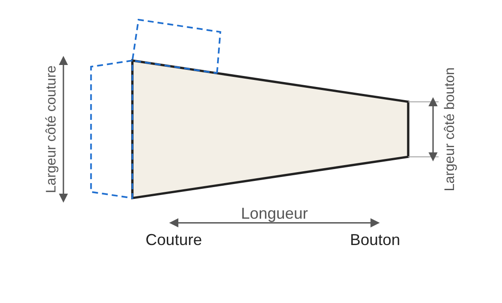
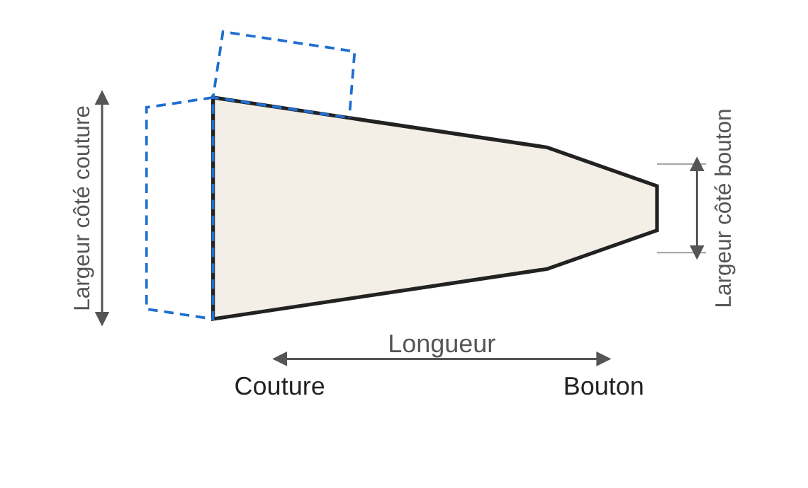
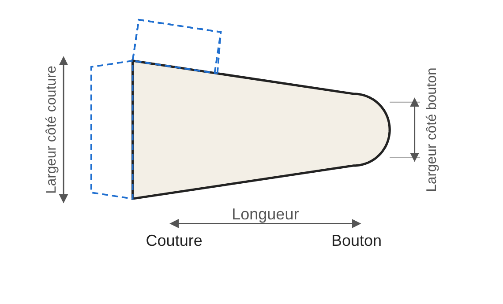

Guide des options : pattes de manches
Les pattes de manches sont importantes au niveau du style et ne sont souvent utilisées que pour celui-ci, sans utilité pratique. Une patte de manche est une petite bande de tissu cousue sur la manche. Son principe est celui d'une épaulette simplifiée.
Les mesures de base
Une patte a deux extrémités : le côté couture, cousu sur la manche, et le côté à fermer (côté bouton), qui croise la fente de manche et se ferme selon votre choix (boutons, boutons-pression…). Elle se compose de deux pièces : coupez 2 exemplaires par patte (4 pour une paire de manches). Trois mesures la définissent :
- Longueur : du côté couture au côté bouton. Choisissez-la selon votre manche et le rendu souhaité.
- Largeur côté couture : largeur à l’extrémité cousue sur la manche.
- Largeur côté bouton : largeur à l’extrémité libre. Si elle est plus petite que la largeur côté couture, la patte s’effile vers le bouton.
Les trois formes
Ces trois formes sont simplement parmi les plus courantes. Ce guide n’a pas la prétention d’être exhaustif : d’autres formes sont envisageables, et les suggestions sont les bienvenues via le formulaire « Votre avis ».



Droite. L’extrémité côté bouton est droite. C’est la forme la plus simple à réaliser.
Biseautée. Les deux angles côté bouton sont coupés en biseau, sans que l’extrémité soit forcément en pointe. Deux options : la longueur du biseau le long du bord (en proportion de la longueur de la patte) et la forme de l’extrémité, de 1 (pas de biseau, extrémité droite) à 0 (pointe franche). Entre les deux, l’extrémité est plus ou moins large.
Arrondie. L’extrémité côté bouton est arrondie. Une seule option : la taille de l’arrondi, en proportion de la longueur. Plus la valeur est grande, plus l’arrondi commence tôt. L’arrondi dépasse légèrement la longueur indiquée.
Placement sur la manche
La patte se fixe sur le côté extérieur de la manche, c’est-à-dire le côté qui n’est pas tourné vers le corps : la partie libre (côté bouton) se trouve en haut et la partie cousue (côté couture) en bas. Elle sert à fermer la fente de manche lorsque celle-ci existe ; sans fente, la patte est purement esthétique. Son positionnement dépend donc de cette fente. Quelques repères :
- Épinglez la patte, ou une bande de papier de même taille, sur la manche et essayez avant de coudre. Repérez ensuite l’emplacement exact du bouton ou de la fermeture.
- Avec une fente, placez la patte de façon que le côté bouton puisse la refermer ; sans fente, choisissez librement l’emplacement selon le style.
- Pour que les deux manches soient identiques, mesurez la distance depuis le bas de manche et reportez la même mesure sur chacune.
- Les pièces sont à couper en deux exemplaires par patte : pensez à placer de la même façon la patte de la manche droite et celle de la manche gauche.
Fermeture
Le patron ne prévoit pas de fermeture : le type (bouton, bouton-pression, velcro…) et son emplacement sont au choix de l'utilisateur, à repérer sur votre vêtement.
Marge de couture et rempli
La marge de couture est réglable dans l’assistant (1 cm par défaut). Le rempli (pointillés bleus du patron) se règle aussi (1,5 cm par défaut). Deux replis sont tracés : le repli côté couture, utilisé lors de l’assemblage de la patte sur la manche, et le repli du haut. Ce second repli est utile lorsque la largeur choisie est petite : le repli côté couture seul serait alors insuffisant pour retourner la pièce.
Conseils de couture
- Selon le tissu et le style choisi, un thermocollant peut être requis sur une ou deux faces.
- Repassez au fer le pli du repli avant de retourner la pièce, pour faciliter la mise en forme finale.
- Dégarnissez bien les angles pour faciliter la remise en forme après retournement.
- Plus le tissu est épais, moins l'angle doit être aigu, pour faciliter la mise en forme.
- Le surpiquage final de la pièce finie est un plus.